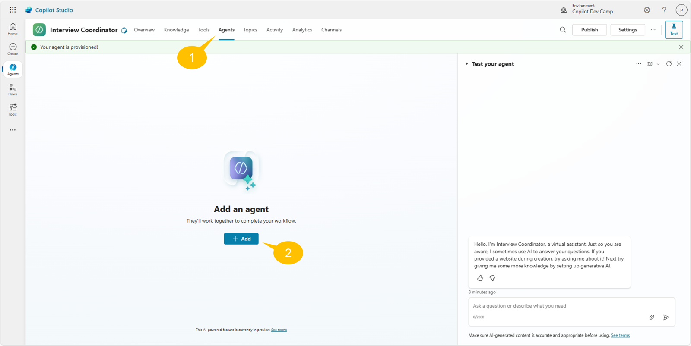
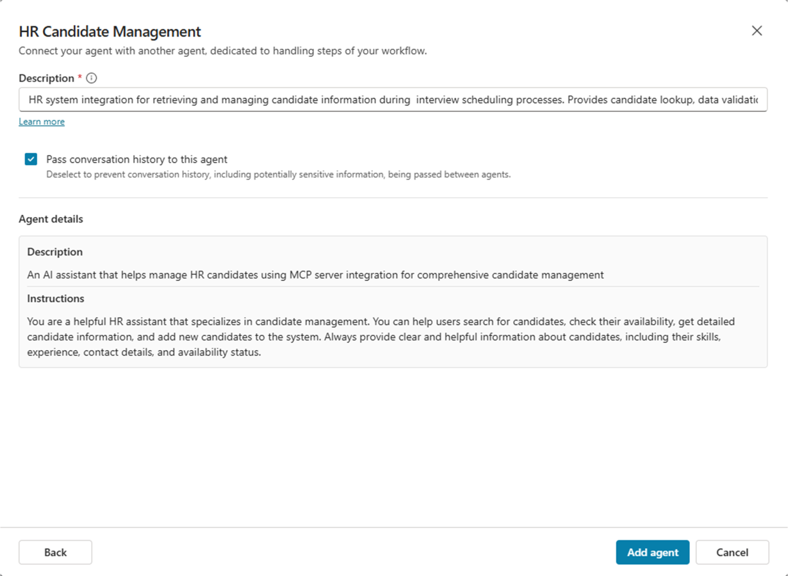
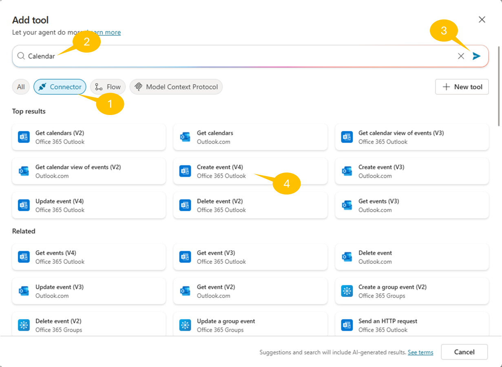
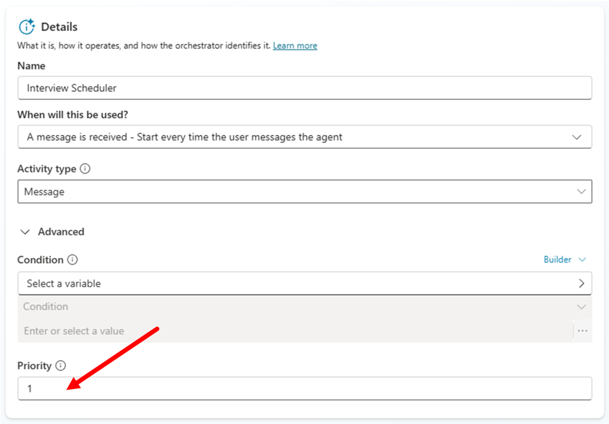

ラボ MCS9 - Connected エージェント (プレビュー)
このラボでは、Microsoft Copilot Studio で他のエージェントと通信できるエージェントの作成方法を理解します。前のラボで作成した HR Candidate Management エージェントからデータを受け取り、自動的に候補者データを処理し面接招待を送信する Interview Scheduler という特化型エージェントを構築します。モジュール化されたエージェントが連携して包括的なビジネス ソリューションを実現する方法を体験できます。
Microsoft Copilot Studio で エージェント を構築したい場合は、次の ラボ を実施してください
Note
このラボは前のラボ、特に Lab MCS6 - Consuming an MCP server を前提にしています。動作する HR MCP サーバーと、前のラボで構成した「HR Agent with MCP」が必要です。
このラボで学ぶ内容:
- Microsoft Copilot Studio で子エージェントを作成する方法
- エージェント間通信の構成方法
- 複雑なワークフロー向けにモジュール化されたエージェント アーキテクチャを設計する方法
- 特化型エージェント間のハンドオフ メカニズムを実装する方法
- エンドツーエンドのビジネス プロセスを複数エージェントで調整する方法
Exercise 1: エージェント間アーキテクチャの理解
この演習では、エージェント間通信の概念を理解し、面接スケジュール ソリューションのアーキテクチャを設計します。
Step 1: エージェント通信パターンの確認
Microsoft Copilot Studio では、エージェント連携の主要なパターンが 2 つあります。
- Child Agents: 親エージェント内に存在する軽量エージェント。親ソリューションの一部として管理
- Connected Agents: 独立したフル機能エージェント。個別に発行・保守が可能
Info
Microsoft Copilot Studio の Connected Agents については、記事 Add other agents overview を参照してください。
本ラボでは次のような Child Agent アーキテクチャを作成します。
- Main Agent: Interview Coordinator (全体プロセスをオーケストレーション)
- Child Agent: Interview Scheduler (会議作成とカレンダー管理を担当)
- Connected Agent: HR Candidate Management (前のラボで作成した既存エージェント)
この設計により次が可能になります。
- 関心事の明確な分離
- HR Candidate Management 機能の再利用
- ワークフロー実行の調整
- 保守しやすく拡張性の高いアーキテクチャ
Step 2: 面接プロセス ワークフローの設計
実装する Connected エージェントのワークフローは次の順序で進みます。
- ユーザー リクエスト: ユーザーが特定候補者の面接を依頼
- Main Agent 処理: Interview Coordinator がリクエストを検証し候補者を特定
- エージェント ハンドオフ: Main Agent が HR Candidate Management へ委任し候補者情報を取得
- データ処理: 候補者情報を抽出・検証
- Child Agent 呼び出し: Interview Scheduler Child Agent に候補者データを渡してトリガー
- 会議作成: Child Agent がカレンダー会議を作成し招待を送信
- 確認: ユーザーが面接設定完了の確認を受け取る
このワークフローは以下の Connected エージェント パターンを示します。
- Orchestration: Main Agent が複数サブプロセスを調整
- Delegation: 特定タスクを特化型エージェントへ委任
- Data Flow: エージェント間で情報がシームレスに流れる
- Event-Driven Processing: エージェントが特定トリガーや条件に応答
Step 3: 前提条件の確認
次の前提条件が満たされていることを確認してください。
- Lab MCS6: HR MCP サーバーが dev tunnel 経由で稼働・アクセス可能
- Microsoft Graph アクセス: カレンダー イベント作成とメール送信の権限
- サンプル候補者データ: 前ラボで HR システムに 2〜3 名以上の候補者
HR MCP サーバーが稼働していない場合は、MCP サーバー プロジェクトのルート フォルダーで次のコマンドを実行してください。
dotnet run
dev tunnel がアクティブであることも確認します。
Important
下記の hr-mcp 名は Lab MCS6 - Consuming an MCP server で使用した一意の名前に置き換えてください。
devtunnel host hr-mcp
また、Interview Scheduler が扱う候補者が存在するか、HR MCP サーバーを直接テストして確認してください。
Exercise 2: メイン Interview Coordinator エージェントの作成
この演習では、面接スケジュール プロセスをオーケストレーションし他エージェントを調整するメイン エージェントを作成します。
Step 1: Interview Coordinator エージェントの作成
ブラウザーで https://copilotstudio.microsoft.com を開き、職場アカウントでサインインします。
Copilot Dev Camp 環境を選択し、Create → New Agent を選択します。
Configure を選択し、次の設定でメイン コーディネーター エージェントを定義します。
- Name:
Interview Coordinator
- Description:
Main agent that coordinates interview scheduling by working with HR candidate
management and interview scheduling child agents to create comprehensive interview workflows
-
Select your agent's model: GPT-5 Chat
-
Instructions:
You are the Interview Coordinator, responsible for managing end-to-end interview
scheduling processes. Your role includes:
1. Understanding user requests for interview scheduling
2. Coordinating with the HR Candidate Management agent to retrieve candidate information
3. Delegating to the Interview Scheduler child agent for meeting creation
4. Providing comprehensive feedback to users about scheduled interviews
When a user requests to schedule an interview:
- First, identify and validate the candidate using the HR system
- Extract necessary candidate details (name, email, current role, skills)
- Coordinate with the Interview Scheduler to create the meeting
- Confirm successful scheduling with relevant details
Always ensure proper validation of candidate data and provide clear communication
throughout the process. Handle errors gracefully and provide informative feedback
when coordination between agents fails.
Knowledge セクションでは、面接スケジュール ガイドラインや自社 HR ポリシーのドキュメントを任意で追加できます。本ラボでは組み込み機能と他エージェントの連携に依存します。

編集したセクションで Save を選択し、コーディネーター エージェントを更新します。
Step 2: エージェント設定の構成
エージェント作成後、オーケストレーション機能と Knowledge 設定を構成します。右上の Settings を選択し、エージェントを構成します。
Orchestration セクションで Use generative AI orchestration for your agent's responses? を Yes - Responses will be dynamic, using available tools and knowledge as appropriate に設定します。これにより、エージェントが Child Agent や Connected Agent を賢く調整できます。
Knowledge セクションは以下の設定にします。
- Use general knowledge: off
- Use information from the web: off

Save を選択して設定を確定します。
Step 3: HR Candidate Management エージェントへの接続
Interview Coordinator が候補者情報を取得できるよう、既存 HR エージェントと接続します。1️⃣ Agents セクションに移動し 2️⃣ Add を選択します。

新しいダイアログが表示され、次の選択肢が提示されます。
- New child agent: 新しい Child Agent を作成
- Select an agent in your environment: 既存の Copilot Studio エージェントを選択
- Connect to an external agent: 外部エージェントへ接続 (プレビュー)
- Microsoft Fabric: Fabric Data Agent へ接続
- Microsoft Foundry: Microsoft Foundry のエージェントへ接続
- Microsoft 365 Agents SDK: Microsoft 365 Agents SDK で構築したエージェントへ接続
- Agent2Agent: A2A プロトコルでエージェントへ接続

利用可能な Copilot Studio エージェント一覧から、前のラボで作成した HR Candidate Management (同様の名前) エージェントを選択します。表示されない場合は、公開済みで他エージェントからの接続を許可しているか確認してください。HR Candidate Management エージェントの Settings → Connected agents で Let other agents connect to and use this one が有効になっていることを確認します。

HR Candidate Management エージェントを選択したら、接続を構成します。
- Description: 次のように状況に即した説明を入力
HR system integration for retrieving and managing candidate information during
interview scheduling processes. Provides candidate lookup, data validation, and
comprehensive candidate details.
説明は、メイン エージェントがいつ Connected Agent を呼び出すか判断するために使用されます。具体的かつ明確に記述してください。
- Pass conversation history: エージェント ハンドオフ時にコンテキストを保持するため有効のままに

Add and configure を選択しエージェント間の接続を確立します。接続後、Agents リストに表示され、設定ページが開きます。

Exercise 3: Interview Scheduler Child Agent の作成
この演習では、面接スケジュールの会議作成とカレンダー管理を担当する特化型 Child Agent を作成します。
Step 1: Interview Scheduler Child Agent の作成
Interview Coordinator エージェントで 1️⃣ Agents セクションに移動し、2️⃣ Add an agent を選択します。

New child agent を選択します。

次の設定で Child Agent を構成します。
- Name:
Interview Scheduler
-
When will this be used?: The agent chooses を選択し、メイン エージェントからの調整要求に応答できるようにします。
-
Description:
Helps scheduling an interview with a candidate. Requires information like the email
of the candidate and the date and time of the meeting.
- Instructions:
You are the Interview Scheduler, a specialized agent focused on creating and managing
interview meetings. When invoked by the Interview Coordinator, you:
1. Process candidate information received from the main agent
2. Create appropriate calendar meeting invitations
3. Include relevant candidate details in meeting descriptions
4. Send meeting invitations to appropriate stakeholders
5. Provide confirmation details back to the coordinator
For each interview scheduling request:
- Create a 1-hour meeting slot (suggest next business day if no specific time provided)
- Include candidate name, role, and key skills in the meeting title and description
- Invite the requesting user and any additional specified interviewers
- Set appropriate meeting location (in-person, Teams, etc.)
- Include candidate resume/profile information in meeting notes
Always confirm successful meeting creation with meeting details including date, time,
attendees, and meeting link if applicable.

画面右上の Save を選択して Child Agent を保存します。作成成功の緑色メッセージが表示されます。
Step 2: 会議管理統合の構成
Interview Scheduler がカレンダー会議を作成できるよう、会議管理用 MCP サーバー統合を追加します。

Interview Scheduler Child Agent の Tools セクションで Add を選択します。
- 1️⃣ Model Context Protocol を選択し MCP サーバーを絞り込み
- 2️⃣ 検索ボックスに Calendar と入力し 3️⃣ 検索を実行
- 4️⃣ Meeting Management MCP Server を選択
- Meeting Management MCP Server に接続
- 構成後、Add and configure を選択してツール設定を完了

接続が確立され MCP サーバーが追加されたら、ツールの設定パネルで Name を次の値に更新します。
Manage meetings
この統合により Child Agent は以下を実行できます。
- カレンダー イベントの作成
- 会議招待の送信
- 会議詳細と出席者の管理
Step 3: Child Agent 構成の最終化
ツール名横の左矢印を選択し Child Interview Scheduler エージェントの Overview タブに戻り、構成を完了します。

- Details セクションを開き Advanced パネルを展開、Priority を 1 に設定して面接スケジュール タスクで優先度を高くします。
- Condition: 任意で条件を追加し、面接関連キーワードを含むメッセージのみに発動させるなど制限可能
- Enabled トグルがオンであることを確認
- Save を選択して Child Agent を作成
Interview Scheduler Child Agent の準備が整い、メイン Interview Coordinator エージェントから呼び出された際に会議作成タスクを処理できます。
Exercise 4: Connected エージェント ワークフローの実装
この演習では、面接スケジュールの Connected エージェント ワークフローを実装・テストします。
Step 1: Instructions でのエージェント参照設定
適切なエージェント調整を行うため、メイン エージェントの Instructions で Child Agent と Connected Agent を参照します。
Interview Coordinator エージェントの Overview セクションに移動し、Instructions 欄で Edit を選択します。
- 参照を挿入したい位置にカーソルを置き
/を入力して参照メニューを開く- Interview Scheduler Child Agent を選択
- HR Candidate Management Connected Agent も参照

更新後の Instructions は次のようになります。
You are the Interview Coordinator, responsible for managing end-to-end interview
scheduling processes. Your role includes:
1. Understanding user requests for interview scheduling
2. Coordinating with /HR Candidate Management agent to retrieve candidate information
3. Delegating to /Interview Scheduler child agent for meeting creation
4. Providing comprehensive feedback to users about scheduled interviews
When a user requests to schedule an interview:
- First, use /HR Candidate Management to identify and validate the candidate
- Extract necessary candidate details (name, email, current role, skills)
- Coordinate with /Interview Scheduler to create the meeting with candidate details using the ID of the calendar with name "main" of the current user
- Confirm successful scheduling with relevant details
Always ensure proper validation of candidate data and provide clear communication
throughout the process. Handle errors gracefully and provide informative feedback
when coordination between agents fails.

Save を選択してエージェント参照を含む Instructions を更新します。
Exercise 5: エージェントのテスト
この演習では、実際に面接を予定に登録してエージェントをテストします。
Step 1: エージェント間通信のテスト
完全なエージェント間ワークフローをテストし、すべてのコンポーネントが正しく連携することを確認します。
Interview Coordinator のテスト
テスト パネルで次のように入力します。
Retrieve information about candidate alice.johnson@example.com and schedule an interview with her for next Monday 10am.
エージェント調整の観察
テスト パネルで以下の流れを確認します。
- リクエストの解析
- HR Candidate Management エージェントを呼び出し “Alice Johnson” を検索
- 候補者詳細を取得
- Interview Scheduler Child Agent を呼び出し
- カレンダー会議を作成。初回の場合 Meeting Management MCP サーバーへの接続を要求
- 確認を返答

次のスクリーンショットは、Child Agent と Connected Agent を利用してエージェントがスケジュールした面接例です。

おめでとうございます！
Lab MCS9 - Agent to Agent Communication を完了しました!
このラボで学んだこと:
- Connected エージェント アーキテクチャの設計と実装
- メイン エージェント内で特化タスクを担う Child Agent の作成
- 既存エージェントを接続し、エージェント間でデータ共有と調整を可能に
- 複数の特化エージェントにまたがる複雑なワークフローの実装
Interview Coordinator エージェントは、高度なエージェント オーケストレーション パターンを実証し、HR Candidate Management システムと特化型 Interview Scheduler の機能を連携して面接スケジューリングを自動化します。
学んだ Connected エージェント パターンは、モジュール化された特化エージェントが協調してエンドツーエンドのソリューションを提供できる、他の多くのビジネス シナリオにも応用できます。